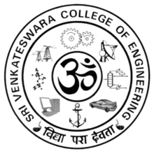

Sri Venkateswara College Of Engineering
[Autonomous - Affiliated to Anna University]
Sriperumbudur Tk , Kancheepuram District
Tamil Nadu , India - 602 117
SVCE
Counselling Code:1219
At a Glance : SVCE
SVCE is a unit of Sri Venkateswara Educational and Health Trust (SVEHT).The Trust was founded on 1 August 1984 at the behest and benign blessings of His Holiness Pujashree Kanchi Kamakoti Peedathipathi Sri Jayendra Saraswathi Swamigal. Dr. A. C. Muthiah, a renowned engineer, industrialist and philanthropist, is the Chairman of the Governing Council of the college. The college is in a 95 acre lush green Campus. It is housed in architecturally exquisite buildings with ample infrastructure such as classrooms, laboratories, libraries, sports arena, canteen, hostels, dispensary, bank etc., While the College supports the learning of the highest order through its quality infrastructure and eminent faculty, it also provides a wide scope for excellent development of personality of students through the effectively functional Associations meant for professional, co-curricular and extracurricular activities. Within a short period, this College has taken firm strides and has grown to be at the top of the table in India. The college celebrated its decennium on March 16, 1996 and its silver jubilee on Sep 29, 2010.History of SVCE :
 The GRIHAPRAVESAM function of the new Campus was performed on 25.07.1991. The Campus houses a Vinayaka temple "SRI VIJAYA GANAPATHI ALAYAM". The new Campus was inaugurated on 5.12.1992 by the then President of India, His Excellency Shri R Venkataraman.
The GRIHAPRAVESAM function of the new Campus was performed on 25.07.1991. The Campus houses a Vinayaka temple "SRI VIJAYA GANAPATHI ALAYAM". The new Campus was inaugurated on 5.12.1992 by the then President of India, His Excellency Shri R Venkataraman.Twenty two batches of students have passed out of the College. Many of them have completed their Masters Degree. Several of our Alumni have completed PhD and work in prestigious US and Indian Universities. Many work in reputed companies like General Motors, Microsoft, CISCO, GEC, Infosys, TCS, CTS, HCL, TVS, Hindustan Motors, etc. A few are entrepreneurs.
The college celebrated its decennium on 16.03.1996 and then Honorable Minister of State for Commerce Shri P. Chidambaram presided over the function. The college conducted the Graduation Day for the first time on 10.01.2009 with the eminent scientist Dr. Mayilswamy Annadurai as the Guest of honour. Academic year 2009-10 was the Silver Jubilee Year of the College. The college conducted the second Graduation Day on 29.3.2010 with the eminent scientist Dr Thirumalachari Ramasami as the Guest of honour.